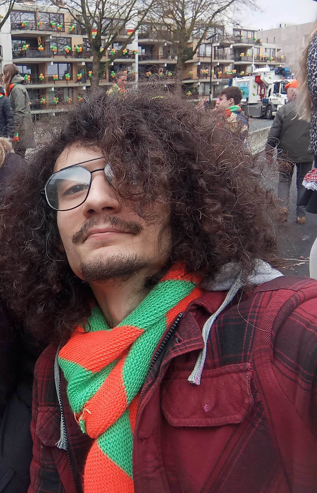

Ik ben de Regionale Werkplaats Monitor bij Decathlon. We hebben werkplaatsen door heel Nederland waar we de repair rates moeten verbeteren. Binnen mijn verantwoordelijkheden vallen de Werkplaatsen van omgeving Amsterdam, Utrecht en Rotterdam. Daarnaast geef ik trainingen voor de fietstechnologie en reparatie (the latest and the greatest). Ik wil graag dichterbij huis werken (in Brabant). Ik ben klaar voor een nieuwe stap in mijn carrière. P.S. Ik spreek ook vloeiend Engels en Turks. Excuses voor de fouten in mijn Nederlands. Ik heb vorig jaar mijn B2 staatsexamen Nederlands gehaald.
